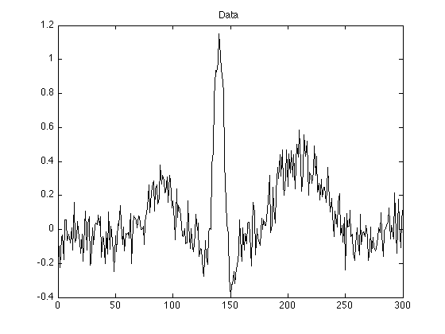
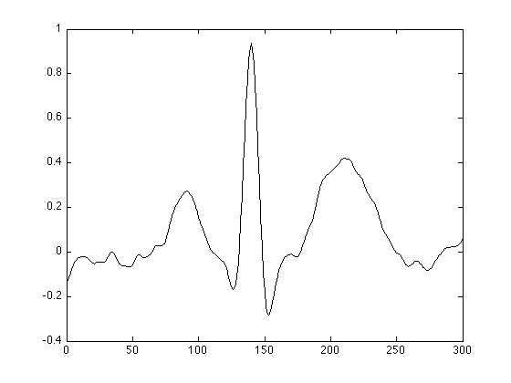
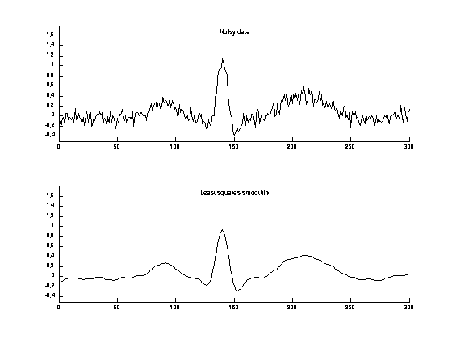

Least squares smoothing
This example illustrates smooth a noisy ECG waveform by least squares. This approach regularizes the energy of the second-order derivative.
Ivan Selesnick selesi@poly.edu
Contents
Start
clear
close all
Load data
load data.txt; whos y = data; % data value N = length(y);
Name Size Bytes Class Attributes data 300x1 2400 double
Display data
figure(1)
clf
plot(y)
title('Data')
 Smoothing (degree = 2)
D is the second-order difference matrix. It approximates the second-order derivative. In order to exploit fast banded solvers in Matlab, we define D as a sparse matrix using 'spdiags'.
e = ones(N, 1); D = spdiags([e -2*e e], 0:2, N-2, N);
Observe the first and last corners of D. (D is too big to display, so we show the first and last corners only.)
First corner of D:
full(D(1:5, 1:5))
ans =
1 -2 1 0 0
0 1 -2 1 0
0 0 1 -2 1
0 0 0 1 -2
0 0 0 0 1
Last corner of D:
full(D(end-4:end, end-4:end))
ans =
1 0 0 0 0
-2 1 0 0 0
1 -2 1 0 0
0 1 -2 1 0
0 0 1 -2 1
Solve the least square problem
lam = 50; F = speye(N) + lam * D' * D; % F is a banded matrix x = F \ y; % Matlab uses a fast solver for banded systems) figure(1) plot(x)
Figures to file
addpath ../extra_functions MyGraphPrefsON PH = 1.5; % plot height YL1 = [-0.5 1.8]; figure(1) clf subplot(2, 1, 1) plot(y) box off mytitle('Noisy data'); ylim(YL1) subplot(2, 1, 2) plot(x) box off mytitle('Least squares smoothing'); xlabel(' ') ylim(YL1) set(gcf, 'PaperPosition',[1 1 3.3 2*PH]) print -deps fig1 MyGraphPrefsOFF
Smoothing (degree = 3)
if 0 D = spdiags([e -3*e 3*e -e], 0:3, N-3, N); full(D(1:6, 1:6)) full(D(end-5:end, end-5:end)) lam = 105; F = speye(N) + lam * D' * D; x = F \ y; figure(1) plot(x) end